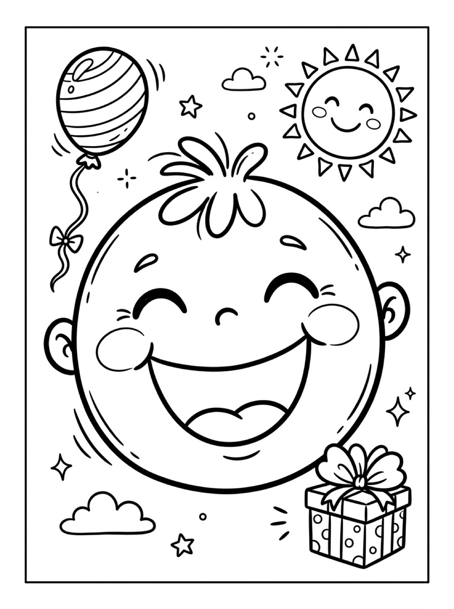
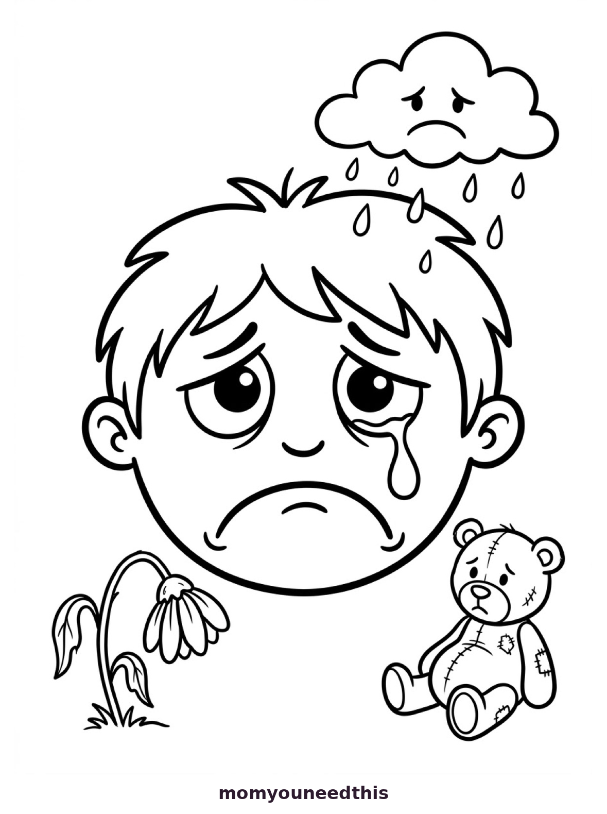
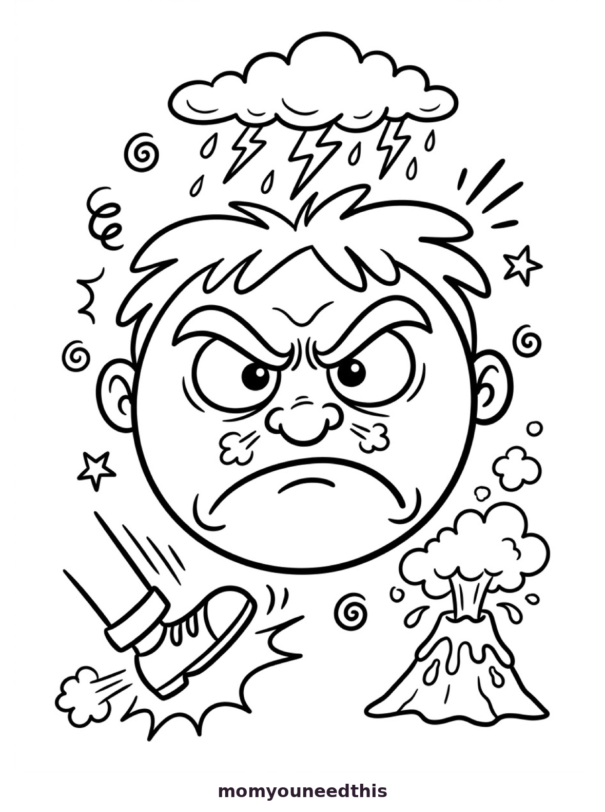

Emotions & Feelings Coloring Pages For Kids Color Faces & Explore Feelings
Quick Answer
These free printable emotions and feelings coloring pages help toddlers and preschoolers explore feelings — coloring happy, sad, angry, surprised, and scared faces while learning each feeling’s name. Simple scenarios on the page connect expressions to real moments. Download and print at home with no signup needed.
Feelings are easier to talk about with a crayon in hand. These coloring pages give young children expressive faces to color while learning the words for what they — and others — feel.
😊 Learn Feelings By Coloring
This one-page printable features large expressive faces with their feeling words in big letters, plus a gentle scenario — “Sam feels happy when...” — for kids to finish by drawing or dictating. Coloring the faces while naming them builds the feeling vocabulary behind emotional intelligence.
🖨️ Download Your Free Feelings Coloring Pages
Color each feeling face, read its word aloud, and finish the scenario together. Print it and keep it on the fridge as a feelings reference — no signup needed.
⬇️ Open Free Printable 🖨️ Print🎁 Free printable for toddlers & preschoolers
😄 Happy Face Coloring Page
A big happy, laughing face with a balloon, a smiling sun and a gift. Color it in, then talk together about what makes your child feel happy.


🎁 Free printable for toddlers & preschoolers
😢 Sad Face Coloring Page
A sad boy's face with a tear, under a rain cloud, with a droopy flower and a patched teddy bear. Color it in, then talk together about what helps when we feel sad.


🎁 Free printable for toddlers & preschoolers
😠 Angry Face Coloring Page
An angry face under a storm cloud with lightning, with a stomping shoe and a small erupting volcano. Color it in, then talk together about what to do when we feel angry.


🎁 Free printable for toddlers & preschoolers
🔍 Finish The Sentence Together
The page’s scenario starter — “I feel proud when...” — is an invitation. Let your child draw or tell you the ending while they color. These little stories reveal how your child sees their emotional world.
💡 Why Coloring Feelings Works
Art gives children a safe, indirect way to explore big emotions — it is easier to color an angry face than to admit feeling angry. The pages open natural conversations about feelings without putting any child on the spot.
📚 Keep Exploring Educational Coloring
- 🎁 Back to Educational Coloring Pages Free printable educational coloring pages for toddlers.
- 🎭 Identify The Emotion Free printable identify the emotion activities for kids.
- 🌈 Calm Down Activities Free printable calm down activities for kids.
- 🙂 Faces & Emotions Free printable faces and emotions activities for kids.
😊 Everyday Feelings With emotions coloring pages
Big feelings are easier to talk about with a crayon in hand, and this emotions coloring page gives kids a calm way to explore them. Color a happy face yellow, a sad face blue, or an angry face red — there is no wrong choice.
Print it and color it together. While you color, talk about a moment when you felt the same way — this emotions coloring page opens gentle conversations without putting any child on the spot. Ask your child to show you the face they feel today, then color that one first. There is no rush, so this emotions coloring page can fill a whole quiet afternoon.
For toddlers, keep it simple: name the feeling, point to the face, and color together. Preschoolers can add their own details, like a sunny background for happy or rain clouds for sad. A happy face is a cheerful start, and this emotions coloring page with big faces is easiest for toddlers.
Keep the finished page on the fridge as a feelings chart. When words are hard, your child can point to a face to show how they feel. For a calm-down corner, keep this emotions coloring page within reach for hard moments.
Print this emotions coloring page this week and start a new feelings ritual together.
See feelings printable for more.
❓ Frequently Asked Questions
How do coloring pages teach emotions?
This page pairs feeling words with big expressive faces to color, plus a gentle real-life scenario. Coloring while naming the feeling builds emotional vocabulary in a relaxed, creative setting for ages 2 to 5.
Are these coloring pages really free?
Yes — every printable on MomYouNeedThis is 100% free to download and print. No signup, no payment, just tap the download button.
Can these help with big feelings?
They can open the door. Coloring a “mad” face often leads to talking about mad moments. For in-the-moment help, pair these with the site’s calm-down activities too.
Are emotions coloring pages good for toddlers?
Yes — emotions coloring pages pair big feeling words with expressive faces to color, so toddlers learn feeling names while they color. Keep sessions short and talk about each face together.